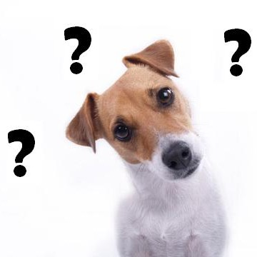
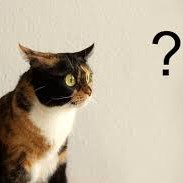
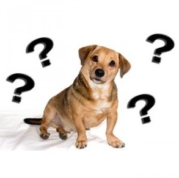
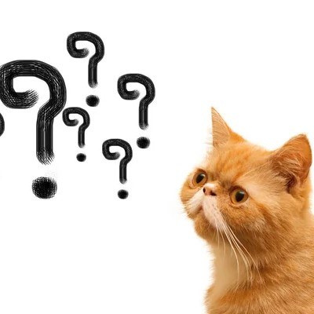

Preguntas frecuentes
¿De dónde vienen los animales que damos en adopción?
Todos los animales que damos en adopción fueron rescatados por nuestros colaboradores,
quienes los encontraron en situación de calle, abandono o maltrato, o que fueron entregados
por personas que no podían quedarse con ellos. Gracias a la ayuda de nuestro equipo de rescatistas,
de profesionales y de veterinarias asociadas, logramos que los animales se recuperen, los cobijamos en
nuestro hogar de tránsito y los hacemos llegar a sus nuevas familias.
¿Cuáles son los pasos del proceso de adopción?
El proceso es bastante rápido pero es un proceso de adopción responsable.
Llenás el formulario de adopción con el nombre de la mascota en que estás interesadx,
nos contactamos con vos, te pedimos datos, te entrevistamos, chequeamos que cumplas con los requisitos para adoptar una mascota,
te hacemos conocer la mascota en nuestro refugio y que hagas el primer contacto con ella, y luego concretamos la adopción.
Periódicamente, te contactaremos, te visitaremos y revisaremos que la mascota esté en las condiciones que corresponde,
hasta que nos aseguremos que está adaptado y teniendo una buena vida con su nueva familia,
o de lo contrario, te la retiraremos y le buscaremos un nuevo hogar.
¿Cómo me preparo para la llegada de mi nueva mascota?
Tenés que saber que las mascotas necesitan un tiempo de adaptación, para conocerte
y conocer a todos los integrantes de la familia. Le va a llevar un tiempo reconocer su nuevo hogar,
así que paciencia, que con amor pronto se sentirá cómoda.
Es importante que te asesores con un veterinario para aprender sobre vacunas, desparasitación y alimentación.
Asegurate de contar con los elementos básicos para que esté cómoda: una cuchita o colchoneta donde
dormir, un platito para comer y tomar agua, una chapita o collar con tus datos y su nombre, y,
si es un gatito, piedritas y litera.
¿Cuáles son los cuidados que debe recibir una mascota?
Desparasitación, vacunación, alimentación y amor.
Con todo esto te vas a ir familiarizando a lo largo de la vida de tu amigo peludo.
Es muy importante que te acerques a un veterinario que pueda recomendarte y enseñarte
sobre las vacunas que necesita, cuándo aplicarlas, cómo realizar una correcta
desparasitación, según peso, hábitos y edad, y qué alimento
cubre las necesidades de tu mascota.
¿Quiénes somos nosotros?
Somos una comunidad originalmente creada por un grupo de amigxs apasionadxs por los animales
que luego se agrandó con la ayuda de nuevxs colaboradorxs surgidxs de las personas que iban conociendo
el emprendimiento e incluso de entre quienes adoptaron algunas de las mascotas que pasaron por nosotros.
Para saber más, dirigite a nosotros


¿Cuáles son los requisitos para adoptar un animal?
El requisito más importante es que tengas mucho amor para dar. El resto de lo que necesitás,
lo tenés detallado en requisitos de adopción.
¿Puedo adoptar una segunda mascota?
¡Qué gran corazón tenés! Por supuesto que podés adoptar varias mascotas,
pero siempre y cuando tengas un buen antecedente con tu adopción anterior, y que cumplas con los requisitos para adoptar otras mascota.
Leé acerca de otras experiencias de adopción en experiencias de animales adoptados.
¿Cómo puedo comunicarme con ustedes?
Podé enviarnos una consulta a través de nuestro formulario de consulta en
nuestra sección de contacto, o podés comunicarte vía
email adoptame.info@gmail.com,
teléfono +54 9 11 1111 1111
o redes sociales, que te detallamos al final de la página.
¿Cómo puedo estar siempre al tanto de los animales que llegan al refugio?
Suscribite a nuestro newsletter, ingresando tu email al final de la página, seguinos en redes sociales
e ingresá frecuentemente a nuestro sitio web.

